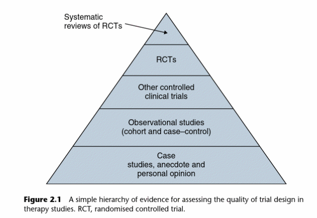

An introduction to EBM (session 3)
Session outline
- this session gives an outline of a set of EBM methods
- as we’ve seen, the methods of EBM have varied
- this session gives a single consistent set of methods from one source
- we’ll dodge most of the statistical content for now
E0: pick a paper
- Please make sure you’ve got access to the core reading for this session (Greenhalgh 2019)
- Please pick an RCT from the list
Exercises
- E1: formulate
- E2: beware of browsing
- E3: three preliminary questions
- E4: summing up
- E5: aggregating evidence
Why appraise?
Why do we need this at all?
- most published papers are bilge, nonsense, and drivel:
for many current scientific fields, claimed research findings may often be simply accurate measures of the prevailing bias (Ioannidis 2005)
- that means we need effective, quick, and coherent ways of judging published research to answer questions
Spurious causes
- Leibovici (2001) - see paper abstract
- Objective: To determine whether remote, retroactive intercessory prayer, said for a group of patients with a bloodstream infection, has an effect on outcomes.
- Design: Double blind, parallel group, randomised controlled trial of a retroactive intervention.
- Setting: University hospital.
- Subjects: All 3393 adult patients whose bloodstream infection was detected at the hospital in 1990-6.
Spurious causes
- Intervention: In July 2000 patients were randomised to a control group and an intervention group. A remote, retroactive intercessory prayer was said for the well being and full recovery of the intervention group.
- Main outcome measures: Mortality in hospital, length of stay in hospital, and duration of fever.
- Results: Mortality was 28.1% (475/1691) in the intervention group and 30.2% (514/1702) in the control group (P for difference=0.4). Length of stay in hospital and duration of fever were significantly shorter in the intervention group than in the control group (P=0.01 and P=0.04, respectively).
These results, however, need to be interpreted with caution. There was no significant difference between the two groups with regard to the most clinically important outcome (mortality), and the median values varied little between prayer and non-prayer on both length of stay (seven and eight days) and duration of fever (two days each). The religious affiliation of the person saying the prayer is not given. Many religious groups do not accept the power of prayer given by those with different beliefs. If real, the effect of prayer shown in this study may be unrelated to supernatural power and hence to a particular belief system, or may be specific to beliefs, reflecting the power inherent in a particular religion. Further work is needed in this area before conclusions can be made. (Thornett 2002)
How to read a paper
Structure of the book
formulate (chapter 1)
retrieve (chapter 2)
appraise (chapter 3 - 15)
apply and evaluate (chapter 16, and other work)
we’ll mainly discuss appraisal today, with a side-order of formulate and retrieve, and we’ll neglect application and evaluation
Formulate
E1: formulate
- From the paper that you selected for this session, we’d like you to work backwards, by formulating a question your paper could potentially answer
- Whom might this apply to?
- Which intervention (or group of interventions) would you know about?
- Which outcomes would you know about?
- Please be ready to share in the chat
Retrieve
- contrast three kinds of searching:
- browsing
- looking
- surveying
- why might Greenhalgh worry about the effects of a casual internet search for evidence?
- in EBM, we’re generally keen on either systematic looking, or surveying the literature
E2: beware of browsing
- Search the topic covered in your selected paper
- In the chat, please let us know:
- Which evidence appears at the top of your search?
- If that evidence aligns with your selected paper?
- Can you link this strategy to our earlier concerns about bias?
Retrieve
- we need an unbiased method for finding evidence
- or, at least, a retrieval method that is biased in a consistent way
- colleagues in The Knowledge Network have good specialist training and support available
Core sources
- The Knowledge Network for training, catalogues, access to other material, experts…
- PubMed for full papers
- Cochrane library for systematic reviews
- BMJ Best Practice and DynaMed for evidence summaries
- SIGN, NICE, and TRIP for guidelines
Appraise
- core ideas:
- “all evidence…is not necessarily equivalent”
- methods give us insight into the likely quality of evidence
- levels of evidence: we should judge evidence by methods, rather than the results obtained
Methods vs evidence
Traditional levels of evidence

- rule of thumb
- disagreements about specific rankings, and methods of ranking
E3: three preliminary questions
- Why was the study needed - and what was the research question?
- What was the research design?
- Was the research design appropriate to the question?
- Please answer the three preliminary questions for your paper
Research design
- treatment - RCT
- diagnosis - cross-sectional
- screening - cross-sectional
- prognosis - longitudinal
- causation - cohort / case-control / pluralism
Quality
- does it add anything to the literature?
- what was the trial population like?
- was the comparison between interventions fair and sensible?
- what were the outcomes?
- how was follow-up?
Intent-to-treat
- Intent-to-treat is the principle of including all withdrawals as if they had completed the trial
- Why is this important?
Summing up
An example
“This is a questionnaire survey of 963 general practitioners randomly selected from throughout the UK, in which they were asked their year of graduation from medical school and the level at which they would begin treatment for essential hypertension. Response options on the structured questionnaire were ‘below 89mmHg’, ‘90-99mmHg’ and ‘100mmHg or greater’.
E4: summing up
- Greenhalgh gives some nice summary paragraphs (p. 58-9) showing:
- what sort of study was performed
- n, and where they came from
- what treatment(s) were compared
- the length and type of follow-up
- the outcome measure used
- Can you write one for your paper?
Aggregating evidence
- meta-analysis = join together the results of several RCTs
- systematic reviews = join together the results of all the RCTs
E5: aggregating evidence
- Can you find a meta-analysis or systematic review for your topic?
- The Knowledge Network for training, catalogues, access to other material, experts…
- PubMed for full papers
- Cochrane library for systematic reviews
- BMJ Best Practice and DynaMed for evidence summaries
- SIGN, NICE, and TRIP for guidelines